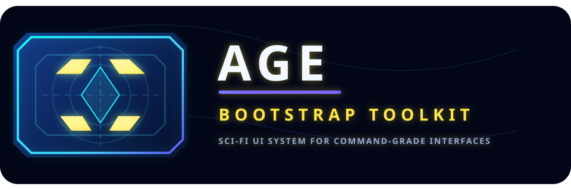

Responsive Grid
12 COL
Bootstrap-compatible container / row / col classes

This toolkit packages reusable Bootstrap-format layout primitives for command-center interfaces: responsive grids, cinematic panels, alert-driven status modules, high-contrast forms, and neon telemetry widgets.
| Zone | Status | Signal | Threat |
|---|---|---|---|
| Noteram | Stable | 92% | Low |
| Outer Ring | Scanning | 74% | Medium |
| Drift Sector | Contested | 48% | High |
Override the root CSS variables to change colors, radii, panel density, and motion. The layout primitives follow Bootstrap naming so teams can migrate incrementally.
.container, .row, and .col-* for structure..panel, .card, and .stat.